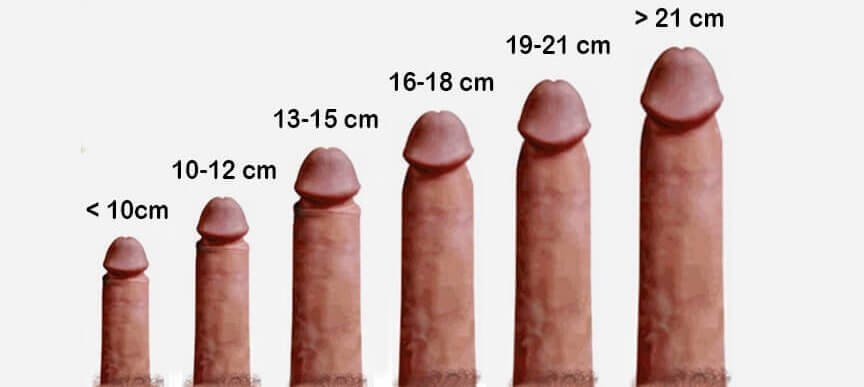

सुंडहेड यूनिवर्सिटी डेन्मार्क के वैज्ञानिकों की दीर्घ-कालिक शोध से पता चला है कि अफ्रीकी लोगों के जनानांग यूरोप और एशिया के लोगों के जननांगों से बड़े क्यों होते हैं।
8 साल से भी ज़्यादा समय तक चलने वाली इस शोध में हजारों लोगों ने हिस्सा लिया था।
यह प्रमाणित हो चुका है कि 3,000 साल से भी पहले अफ्रीकी लोग न्गूवू बेरी खाते थे। स्वाहिली भाषा में न्गूवू का अर्थ होता है “शक्ति की बेरी”। आज हम इन बेरियों के जादुई प्रभाव के बारे में सिर्फ अफ्रीकी किवदंतियों में सुन सकते हैं। ये बेरियाँ करीब 600 साल पहले विलुप्त हो गईं थीं।
वैज्ञानिकों ने बेरियों के बारे में उपलब्ध जानकारी का अध्ययन किया और एक संभावित डीएनए संरचना सामने आई। इसके बाद इस संरचना की तुलना अफ्रीकी आदमियों के डीएनए से की गई। कई वर्षों की शोध के बाद वैज्ञानिकों ने पाया कि इन दोनों के बीच एक संबंध है जिसे “न्गूवू शक्ति” का नाम दिया गया।

वैज्ञानिकों ने डीएनए के उस हिस्से को अलग करना सीख लिया है जिसके कारण जननांग किशोरवस्था के बाद भी बढ़ते रहते हैं। इसका अर्थ यह हुआ कि यदि आप जीन पर आधारित इस उत्पाद का सेवन करेंगे तो आपका लिंग भी बड़ा हो सकता है और किसी भी उम्र में आपका लिंग बेहतर खड़ा हो पाएगा।
इस शानदार नुस्खे के उत्पादन के लिए दुनिया की 14 सबसे बड़ी दवाई कंपनियों के बीच होड़ लग गई। इसमें कामयाबी लेकिन सिर्फ हेंडेल कंपनी को मिली और यही कंपनी इसकी अधिकृत उत्पादक है। इस नुस्खे का नाम है .

नैदानिक परीक्षणों के दौरान 85 प्रतिशत पुरुषों ने माना कि एक माह तक कैप्स्यूल खाने के बाद उनका लिंग 4-5 सेमी लंबा और 1.5 सेमी मोटा हो गया।
10 प्रतिशत सहभागियों ने कहा कि उनका लिंग 3-3.5 सेमी मोटा हो गया और 5% पुरुषों के अनुसार उनका लिंग 6-7 सेमी बढ़ गया।
इसके अलावा कई पुरुषों ने संभोग का समय बढ़ जाने की बात भी स्वीकार की।
कैप्स्यूलों का सेवन करने से न सिर्फ स्तंभन शक्ति बेहतर होती है, इसका असर भी लंबे समय तक चलता है। लिंग के ऊतकों को रक्त के अच्छे प्रवाह की जरूरत होती है जिससे सूक्ष्म तत्व जैसे ज़िंक (Zn), क्रोम (Cr), लोहा (Fe) और विटामिन बी,सी, और ई कॉम्प्लेक्स तेजी से मिलते हैं।
यही नहीं, में BCAA (ब्रांच्ड-चेन अमीनो एसिड) होते हैं: ल्यूसिनम, वैलिन, आइसोल्यूसिन और एक अद्वितीय घटक पैराग्लायकोलिक एसिड (H2ZP29) भी हैं” – नैदानिक विभाग के निदेशक, जॉन मिशेल ने बताया।
टेस्टोस्टेरोन स्तर बढ़ जाने से शुक्राणुओं की गुणवत्ता भी बेहतर हो जाती है।
ऑपरेशन करवा के लिंग बड़ा करने का विकल्प आपके पास हमेशा है लेकिन याद रखिए इसमें काफी तकलीफ़ का सामना करना पड़ता है और ऑपरेशन के बाद होने वाले मरोड़ कई महीनों तक तकलीफ दे सकते हैं। इस प्रक्रिया में काफी जोखिम भी होता है और इससे नपुंसकता और नेक्रोसिस (ऊतक क्षय) भी हो सकते हैं।
एक शोध में महिलाओं द्वारा पुरुष के लिंग के आकार से होने वाली संतुष्टि के आधार पर लिंग के आकार को निम्नलिखित श्रेणियों में बांटा गया है:
- 10 सेमी से कम लंबे लिंग “माइक्रो” या “सूक्ष्म लिंग कहलाते हैं। महिलाएं इन्हें बिल्कुल पसंद नहीं करतीं।
- 10-12 सेमी के लिंग को छोटे आकार का लिंग माना जाता है। ऐसे लिंग से एक औरत को संतुष्ट करना लगभग असंभव होता है।
- 13-15 सेमी ठीक आकार होता है। डॉक्टर की नज़रों में यह सामान्य आकार है और इससे औरत को संतुष्टि मिल सकने की संभावना होती है।
- 16-18 सेमी औसत आकार होता है। लेकिन अधिकतर महिलाओं को और बड़ा लिंग चाहिए होता है।
- 19-21 सेमी का लिंग बड़ा होता है। ऐसे पुरुषों की पत्नियों और गर्लफ्रेंड्स को कामोन्माद तक पहुँचने में कोई परेशानी नहीं होती।
- 21 सेमी से बड़ा आकार बहुत बड़ा माना जाता है। सिर्फ 1.5 प्रतिशत पुरुषों का लिंग ही प्राकृतिक रूप से इस आकार का होता है।
कैप्स्यूलों की मदद से अपने लिंग का आकार अगले स्तर तक बड़ा कर सकते हैं, या दो स्तर तक भी बढ़ा सकते हैं।
आप दवाई की दुकानों में नहीं खरीद सकते। यह सिर्फ ऑफिशियल साइट पर उपलब्ध है। नक्कालों से सावधान रहिए और इसी तरह के ब्रांड नाम वाले दूसरे उत्पाद मत खरीदिए। सिर्फ इसी को ही नैदानिक परीक्षण से प्रमाणित किया गया है।
टिप्पणियाँ